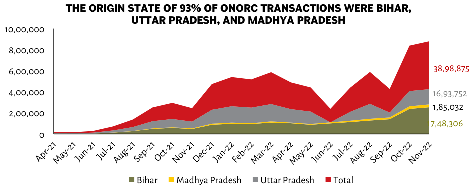

| Month | Bihar (Green) | Madhya Pradesh (Yellow) | Uttar Pradesh (Grey) | Total (Red Stacked Top) | | :--- | :--- | :--- | :--- | :--- | | Apr-21 | ~5,000 | 0 | 0 | < 389k (~< $4M total value implied by scale context but visually negligible in stack height for first few months). Note: The visual Y-axis range is up to >6m and the final data point explicitly states "Total" as exactly that number at Nov-22.| | May-21 - Jul-22 | Increasing slowly (<7K combined visible area)| Very low/negligible|< <10K|| | Aug-21 onwards until Dec-21 peak period (>4M) || Dominant segment of red layer|N/A(Stacked)| | Jan-22 Feb-22 Mar-22 Peak Period(>5M-6M stacked)||Dominant Red Layer|>=3M each month| | Jun-22 July-22 Low Point/< 2M Combined Area||Drop then rise again mid year| | Sep-Oct Rise Phase (>4M+$3M+)<br/>Nov-Dec Spike Maxes out chart (>8M Visual Height)| Final Data Points:<br/>Bihar = **17,48,306**<br/>Madhya Pradesh = **1,85,032**<br/>Uttar Pradesh = **16,93,752**<br/>Total on Chart Label = **38,98,875**|
